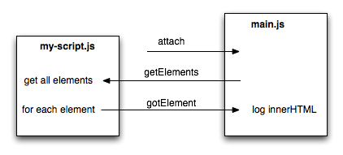

Stable
Run scripts in the context of web pages whose URL matches a given pattern.
Usage
To use page-mod, you specify:
- one or more scripts to attach. The SDK calls these scripts "content scripts".
- a pattern that a page's URL must match, in order for the script(s) to be attached to that page.
For example, the following add-on displays an alert whenever the user visits any page hosted at "mozilla.org":
var pageMod = require("sdk/page-mod");
pageMod.PageMod({
include: "*.mozilla.org",
contentScript: 'window.alert("Page matches ruleset");'
});
You can modify the document in your script:
var pageMod = require("sdk/page-mod");
pageMod.PageMod({
include: "*.mozilla.org",
contentScript: 'document.body.innerHTML = ' +
' "<h1>Page matches ruleset</h1>";'
});
You can supply the content script(s) in one of two ways:
- as a string literal, or an array of string literals, assigned to the
contentScriptoption, as above - as separate files supplied in your add-on's "data" directory.
If you supply the scripts as separate files in the "data" directory, you specify them using with a URL, typically constructed using the url() method of the self module's data object:
var data = require("sdk/self").data;
var pageMod = require("sdk/page-mod");
pageMod.PageMod({
include: "*.mozilla.org",
contentScriptFile: data.url("my-script.js")
});
var data = require("sdk/self").data;
var pageMod = require("sdk/page-mod");
pageMod.PageMod({
include: "*.mozilla.org",
contentScriptFile: [data.url("jquery-1.7.min.js"),
data.url("my-script.js")]
});
From Firefox 34, you can use "./my-script.js" as an alias for self.data.url("my-script.js"). So you can rewrite the above code like this:
var pageMod = require("sdk/page-mod");
pageMod.PageMod({
include: "*.mozilla.org",
contentScriptFile: "./my-script.js"
});
Unless your content script is extremely simple and consists only of a static string, don't use contentScript: if you do, you may have problems getting your add-on approved on AMO.
Instead, keep the script in a separate file and load it using contentScriptFile. This makes your code easier to maintain, secure, debug and review.
A page-mod only attaches scripts to documents loaded in tabs. It will not attach scripts to add-on panels, page-workers, sidebars, or Firefox hidden windows.
To stop a page-mod from making any more modifications, call its destroy() method.
The PageMod constructor takes a number of other options to control its behavior:
contentStyle |
Lists stylesheets to attach, supplied as strings. |
contentStyleFile |
Lists stylesheets to attach, supplied in separate files. |
contentScriptOptions |
Defines read-only values accessible to content scripts. |
attachTo |
Controls whether to attach scripts to tabs that were already open when the page-mod was created, and whether to attach scripts to iframes as well as the topmost document. |
contentScriptWhen |
Controls the point during document load at which content scripts are attached. |
exclude |
Has the same syntax as |
These options are documented in detail below.
For all the details on content scripts, see the guide to content scripts.
Communicating With Content Scripts
Your add-on's "main.js" can't directly access the state of content scripts you load, but you can communicate between your add-on and its content scripts by exchanging messages.
To do this, you'll need to listen to the page-mod's attach event. This event is triggered every time the page-mod's content script is attached to a document. The listener is passed a worker object that your add-on can use to send and receive messages.
For example, the following add-on retrieves the HTML content of specific tags from documents that match the pattern. The main add-on code sends the desired tag to the content script, and the content script replies by sending the HTML content of all the elements with that tag.
/lib/main.js:
var tag = "p";
var data = require("sdk/self").data;
var pageMod = require("sdk/page-mod");
pageMod.PageMod({
include: "*.mozilla.org",
contentScriptFile: data.url("element-getter.js"),
onAttach: function(worker) {
worker.port.emit("getElements", tag);
worker.port.on("gotElement", function(elementContent) {
console.log(elementContent);
});
}
});
/data/element-getter.js:
self.port.on("getElements", function(tag) {
var elements = document.getElementsByTagName(tag);
for (var i = 0; i < elements.length; i++) {
self.port.emit("gotElement", elements[i].innerHTML);
}
});
When the user loads a document hosted at "mozilla.org":
- The content script "element-getter.js" is attached to the document and runs. It adds a listener to the
getElementsmessage. - The
attachevent is sent to the "main.js" code. Its event handler sends thegetElementsmessage to the content script, and then adds a listener to thegotElementmessage. - The content script receives the
getElementsmessage, retrieves all elements of that type, and for each element sends agotElementmessage containing the element'sinnerHTML. - The "main.js" code receives each
gotElementmessage and logs the contents.
If multiple documents that match the page-mod's include pattern are loaded, then each document is loaded into its own execution context with its own copy of the content scripts. In this case the listener assigned to onAttach is called once for each loaded document, and the add-on code will have a separate worker for each document.
To learn much more about communicating with content scripts, see the guide to content scripts and in particular the chapter on communicating using port.
Mapping Workers to Tabs
The worker has a tab property which returns the tab associated with this worker. You can use this to access the tabs API for the tab associated with a specific document:
var pageMod = require("sdk/page-mod");
var tabs = require("sdk/tabs");
pageMod.PageMod({
include: ["*"],
onAttach: function onAttach(worker) {
console.log(worker.tab.title);
}
});
Destroying Workers
Workers generate a detach event when their associated document is closed: that is, when the tab is closed or when the associated window's unload event occurs. If you are maintaining a list of workers belonging to a page-mod, you can use this event to remove workers that are no longer valid.
For example, if you maintain a list of workers attached to a page-mod:
var workers = [];
var pageMod = require("sdk/page-mod").PageMod({
include: ['*'],
contentScriptWhen: 'ready',
contentScriptFile: data.url('pagemod.js'),
onAttach: function(worker) {
workers.push(worker);
}
});
You can remove workers when they are no longer valid by listening to detach:
var workers = [];
function detachWorker(worker, workerArray) {
var index = workerArray.indexOf(worker);
if(index != -1) {
workerArray.splice(index, 1);
}
}
var pageMod = require("sdk/page-mod").PageMod({
include: ['*'],
contentScriptWhen: 'ready',
contentScriptFile: data.url('pagemod.js'),
onAttach: function(worker) {
workers.push(worker);
worker.on('detach', function () {
detachWorker(this, workers);
});
}
});
Cleaning up on add-on removal
Content scripts receive a detach message when the add-on that attached them is disabled or removed: you can use this in the content script to undo any changes that you've made. For example, here's an add-on that attaches a script to every page the user loads:
var data = require("sdk/self").data;
var pageMod = require("sdk/page-mod");
pageMod.PageMod({
include: "*",
contentScriptFile: data.url("eaten.js")
});
The content script replaces the page contents, but restores the original contents when it receives detach:
// eaten.js
var oldInnerHTML = window.document.body.innerHTML;
window.document.body.innerHTML = "eaten!";
self.port.on("detach", function() {
window.document.body.innerHTML = oldInnerHTML;
});
Try running the add-on, loading some pages, and then disabling the add-on in the Add-ons Manager. Note that this is a very naive implementation, created only for demonstration purposes, and will not work properly in many real-world cases.
Attaching Content Scripts to Tabs
We've seen that the page-mod API attaches content scripts to documents based on their URL. Sometimes, though, we don't care about the URL: we just want to execute a script on demand in the context of a particular tab.
For example, we might want to run a script in the context of the currently active tab when the user clicks a button: to block certain content, to change the font style, or to display the document's DOM structure.
Using the attach method of the tab object, you can attach a set of content scripts to a particular tab. The scripts are executed immediately.
The following add-on creates a button which, when clicked, highlights all the div elements in the document loaded into the active tab:
require("sdk/ui/button/action").ActionButton({
id: "highlight-divs",
label: "Highlight divs",
icon: "./icon-16.png",
onClick: function() {
require("sdk/tabs").activeTab.attach({
contentScript:
'var divs = document.getElementsByTagName("div");' +
'for (var i = 0; i < divs.length; ++i) {' +
'divs[i].setAttribute("style", "border: solid red 1px;");' +
'}'
});
}
});
To run this example you'll also have to have an icon file named "icon-16.png" saved in your add-on's "data" directory. You could use this icon:  .
.
Private Windows
If your add-on has not opted into private browsing, then your page-mods will not attach content scripts to documents loaded into private windows, even if their URLs match the pattern you have specified.
To learn more about private windows, how to opt into private browsing, and how to support private browsing, refer to the documentation for the private-browsing module.
Globals
Constructors
PageMod(options)
Creates a page-mod.
Parameters
options : object
Required options:
| Name | Type | |
|---|---|---|
| include |
string, array of (String or RegExp) |
A match pattern string or an array of match pattern strings. These define the documents to which the page-mod applies. At least one match pattern must be supplied. You can specify a URL exactly: var pageMod = require("sdk/page-mod");
pageMod.PageMod({
include: "http://www.iana.org/domains/example/",
contentScript: 'window.alert("Page matches ruleset");'
});
You can specify a number of wildcard forms, for example: var pageMod = require("sdk/page-mod");
pageMod.PageMod({
include: "*.mozilla.org",
contentScript: 'window.alert("Matched!");'
});
You can specify a set of URLs using a regular expression. The pattern must match the entire URL, not just a subset, and has var pageMod = require("sdk/page-mod");
pageMod.PageMod({
include: /.*developer.*/,
contentScript: 'window.alert("Matched!");'
});
To specify multiple patterns, pass an array of match patterns: var pageMod = require("sdk/page-mod");
pageMod.PageMod({
include: ["*.foo.org", "*.bar.com"],
contentScript: 'window.alert("Matched!");'
});
See the match-pattern module for a detailed description of match pattern syntax. |
Optional options:
| Name | Type | |
|---|---|---|
| contentScriptFile | string,array |
This option specifies one or more content scripts to attach to targeted documents. Each script is supplied as a separate file under your add-on's "data" directory, and is specified by a URL typically constructed using the var data = require("sdk/self").data;
var pageMod = require("sdk/page-mod");
pageMod.PageMod({
include: "*",
contentScriptFile: data.url("my-script.js")
});
From Firefox 34, you can use var pageMod = require("sdk/page-mod");
pageMod.PageMod({
include: "*",
contentScriptFile: "./my-script.js"
});
To attach multiple scripts, pass an array of URLs. var data = require("sdk/self").data;
var pageMod = require("sdk/page-mod");
pageMod.PageMod({
include: "*",
contentScriptFile: [data.url("jquery.min.js"),
data.url("my-script.js")]
});
Content scripts specified using this option are loaded before those specified by the |
| contentScript | string,array |
This option specifies one or more content scripts to attach to targeted documents. Each script is supplied directly as a single string: var pageMod = require("sdk/page-mod");
pageMod.PageMod({
include: "*",
contentScript: 'window.alert("Matched!");'
});
To attach multiple scripts, supply an array of strings. Content scripts specified by this option are loaded after those specified by the Unless your content script is extremely simple and consists only of a static string, don't use Instead, keep the script in a separate file and load it using |
| contentScriptWhen | string |
By default, content scripts are attached after all the content (DOM, JS, CSS, images) for the document has been loaded, at the time the window.onload event fires. Using this option you can customize this behavior. The option takes a single string that may take any one of the following values:
var pageMod = require("sdk/page-mod");
pageMod.PageMod({
include: "*",
contentScript: 'window.alert("Matched!");',
contentScriptWhen: "start"
});
If you specify This property defaults to "end". |
| contentScriptOptions | object |
You can use this option to define some read-only values for your content scripts. The option consists of an object literal listing var data = require("sdk/self").data;
var pageMod = require("sdk/page-mod");
pageMod.PageMod({
include: "*",
contentScriptFile: data.url("show.js"),
contentScriptOptions: {
showOptions: true,
numbers: [1, 2],
greeting: "Hello!"
}
});
The values are accessible to content scripts via the // show.js
if (self.options.showOptions) {
window.alert(self.options.greeting);
var sum = self.options.numbers[0] +
self.options.numbers[1];
window.alert(sum);
}
The values can be any JSON-serializable value: a string, number, boolean, null, array of JSON-serializable values, or an object whose property values are themselves JSON-serializable. This means you can't send functions, and if the object contains methods they won't be usable. You also can't pass cyclic values. |
| contentStyleFile | string,array |
Use this option to load one or more stylesheets into the targeted documents as user stylesheets. Each stylesheet is supplied as a separate file under your add-on's "data" directory, and is specified by a URL typically constructed using the var data = require("sdk/self").data;
var pageMod = require("sdk/page-mod");
pageMod.PageMod({
include: "*.org",
contentStyleFile: data.url("style.css")
});
From Firefox 34, you can use "./style.css" as an alias for the resource:// URL pointing to the stylesheet in your "data" directory. So you can rewrite the code above like this: var pageMod = require("sdk/page-mod");
pageMod.PageMod({
include: "*.org",
contentStyleFile: "./style.css"
});
Content styles specified by this option are loaded before those specified by the In earlier versions of this module, you couldn't use relative URLs in stylesheets loaded in this way, and you had to use a workaround. In current versions this has been fixed, and the workaround is no longer needed. |
| contentStyle | string,array |
Use this option to load one or more stylesheet rules into the targeted documents. Each stylesheet rule is supplied as a separate string. To supply multiple rules, pass an array of strings: var pageMod = require("sdk/page-mod");
pageMod.PageMod({
include: "*.org",
contentStyle: [
"div { padding: 10px; color: red }",
"img { display: none }"
]
});
Content styles specified by this option are loaded after those specified by the |
| attachTo | string,array |
If this option is not specified, content scripts:
You can modify this behavior using the It accepts the following values:
If the option is set at all, you must set at least one of For example, the following page-mod will be attached to already opened tabs, but not to any iframes: var pageMod = require("sdk/page-mod");
pageMod.PageMod({
include: "*",
contentScript: "",
attachTo: ["existing", "top"],
onAttach: function(worker) {
console.log(worker.tab.url);
}
});
|
| onAttach | function |
Assign a listener function to this option to listen to the page-mod's |
| exclude |
string, array of (String or RegExp) |
This option is new in Firefox 32 Specifies a range of URLs to exclude. This takes the same syntax as the These match-patterns define the documents to which the page-mod will not be applied, even if their URLs match the var pageMod = require("sdk/page-mod");
var modScript = 'console.log("matches");';
pageMod.PageMod({
include: "*.mozilla.org",
exclude: "*.developer.mozilla.org",
contentScript: modScript
});
var tabs = require("sdk/tabs");
tabs.open("mozilla.org"); // matches
tabs.open("addons.mozilla.org"); // matches
tabs.open("developer.mozilla.org"); // no match
|
PageMod
A page-mod object. Once created a page-mod will execute the supplied content scripts, and load any supplied stylesheets, in the context of any documents matching the pattern specified by the include property.
Methods
destroy()
Stops the page-mod from making any more modifications. Once destroyed the page-mod can no longer be used.
Modifications already made to open documents by content scripts will not be undone, but stylesheets added by contentStyle or contentStyleFile, will be unregistered immediately.
Properties
include
A list of match pattern strings. These define the documents to which the page-mod applies. See the documentation of the include option above for details of include syntax.
Events
attach
This event is emitted when the page-mod's content scripts are attached to a document whose URL matches the page-mod's include pattern.
The listener function is passed a worker object that you can use to communicate with the content scripts your page-mod has loaded into this particular document.
The attach event is triggered every time this page-mod's content scripts are attached to a document. So if the user loads several documents which match this page-mod's include pattern, attach will be triggered for each document, each time with a distinct worker instance.
Each worker then represents a channel of communication with the set of content scripts loaded by this particular page-mod into that particular document.
Arguments
Worker : The listener function is passed a Worker object that can be used to communicate with any content scripts attached to this document.
error
This event is emitted when an uncaught runtime error occurs in one of the page-mod's content scripts.
Arguments
Error : Listeners are passed a single argument, the Error object.
{kind=link}